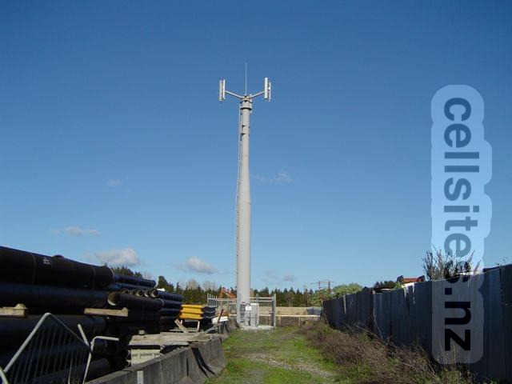
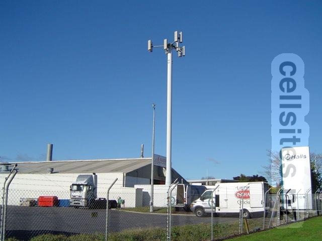
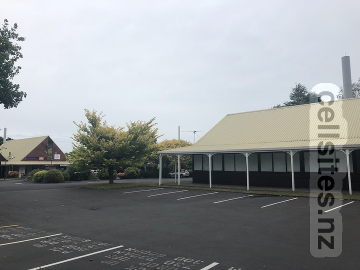
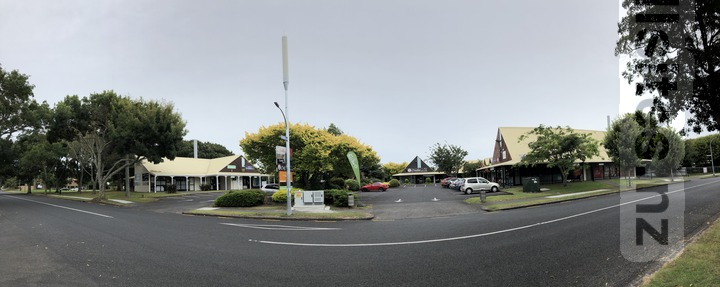
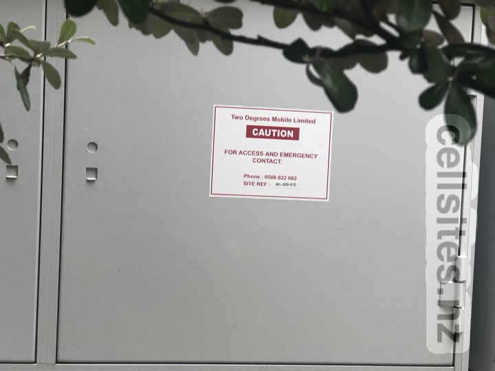
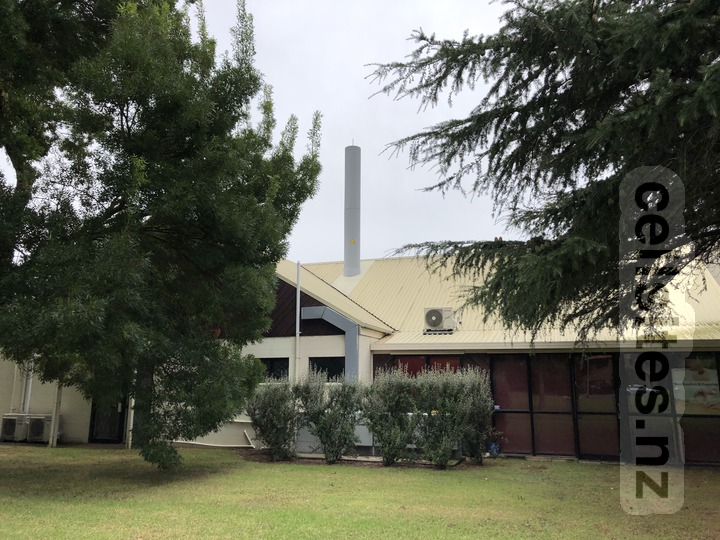
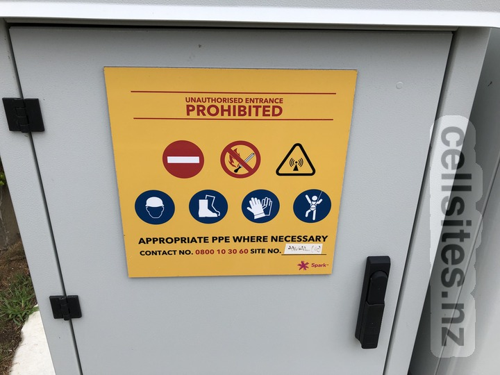
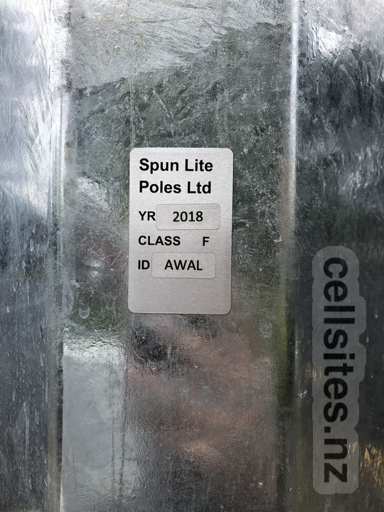
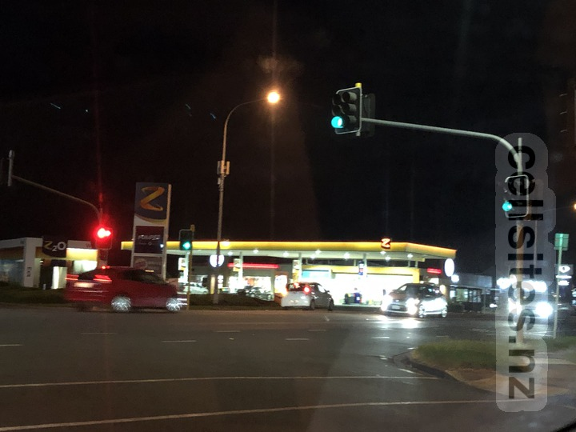

Vodafone Manurewa East

Telecom Takanini
Note: This site no longer exists.

Vodafone Confier Grove

Vodafone site on far right.

Vodafone site on right.
2degrees Conifer Grove
2degrees site on far left.

Caution sign on 2degrees cabinet.

Overview of 2degrees site.
2degrees site on left.
Spark Walter Strevens Drive
Spark site in centre foreground.

Prohibited sign on Spark cabinet.

Identification sticker on light pole.
2degrees Manurewa East AAU
